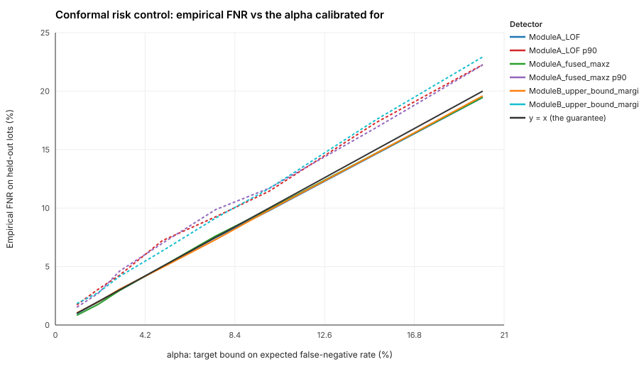
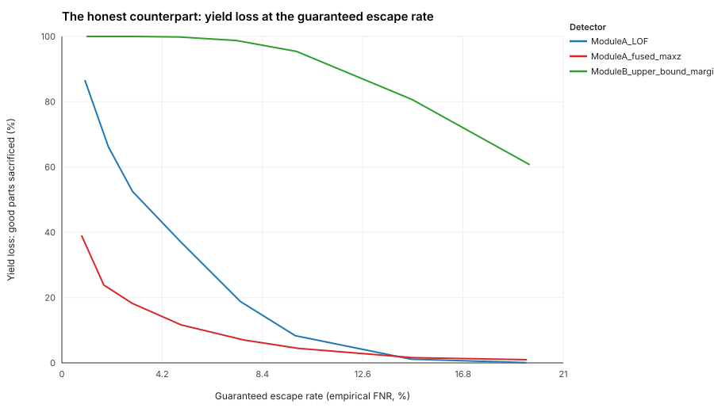

Chapter 5
A bounded escape rate: conformal risk control
Most screens are tuned for high recall and hope. Conformal risk control gives a distribution-free, finite-sample bound on the expected escape rate of the screen itself.
The mechanism
Following Angelopoulos, Bates, Fisch, Lei and Schuster (ICLR 2024), with a detector score where
higher means more anomalous and a part flagged when score ≥ λ:
L(λ) = fraction of defective calibration parts with score < λ
λ̂ = the largest λ with (n·L(λ) + 1) / (n + 1) ≤ α
then E[ escape rate at λ̂ ] ≤ α on future exchangeable partsn is the number of defective calibration parts, not the calibration set
size; at 1.75% prevalence getting that wrong would silently loosen the bound.
Does it hold?
Eight target rates from 1% to 20%, three scores (the fused Module A score, LOF alone, and the Module B bound margin), 40 random lot-grouped calibration/evaluation splits of the validation and test lots each. A one-sided t-test asks whether any mean escape rate exceeds its target by more than the split-to-split spread explains. 0 of 24 show a significant violation; the smallest p-value is 0.34 and the largest overshoot is 0.4 standard errors.

What the guarantee costs
| Target α | Measured escape rate | Yield loss | Splits individually above α |
|---|---|---|---|
| 1% | 0.82% | 39.0% | 30% |
| 2% | 1.76% | 23.8% | 35% |
| 3% | 2.95% | 18.2% | 48% |
| 5% | 5.00% | 11.6% | 50% |
| 7.5% | 7.62% | 7.0% | 57% |
| 10% | 9.90% | 4.4% | 52% |
| 15% | 14.68% | 1.6% | 32% |
| 20% | 19.48% | 1.0% | 45% |
A 1% bound costs 39.0% of good parts; 5% costs 11.6%; 10% costs 4.4%. The curve is steep at the low end because mild-severity defects sit right at the edge of the good population. Where to sit on it is a programme decision set by the cost of an escape against the cost of a scrapped part, not a model decision. The fused score dominates LOF at tight targets (39.0% against 86.6% yield loss at 1%), the reverse of their PR-AUC order: conformal at low α lives entirely in the extreme high-recall tail.

MIL-STD-883 already uses PDA (Percent Defective Allowable) as a statistical bound on lot quality. Conformal risk control is the same class of bound, applied to the escape rate of the screening system itself.